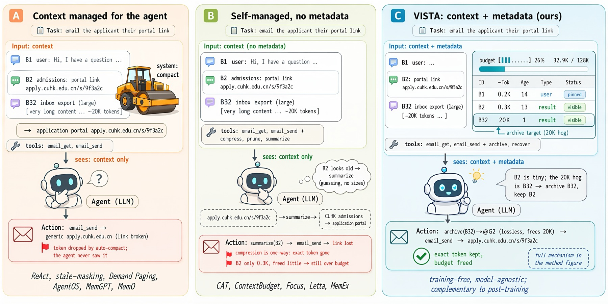
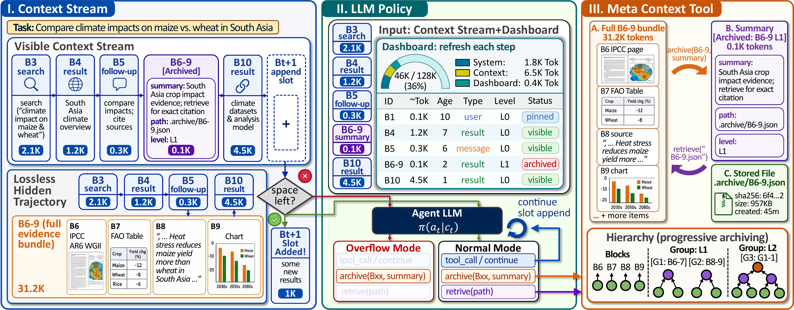
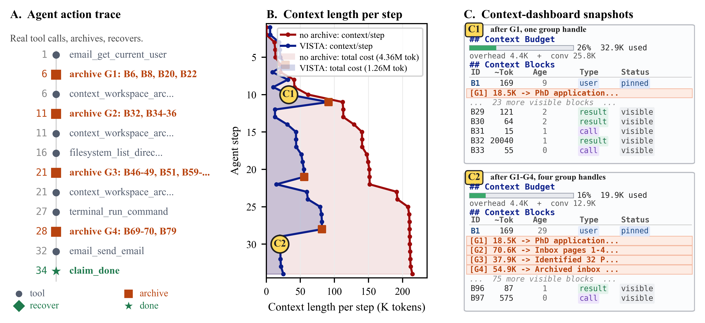
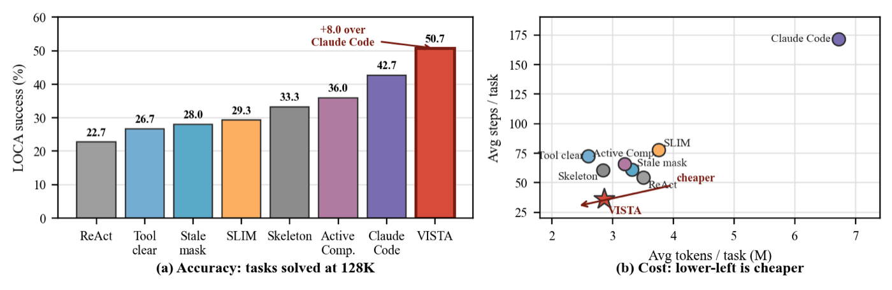
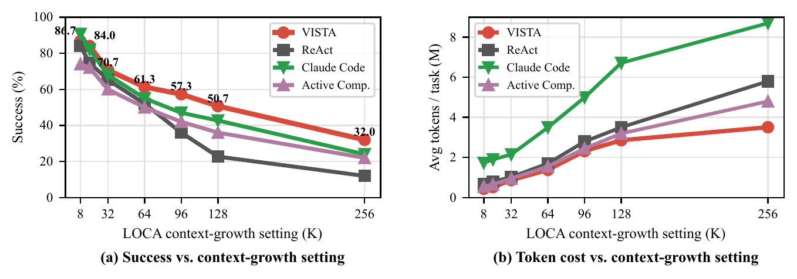
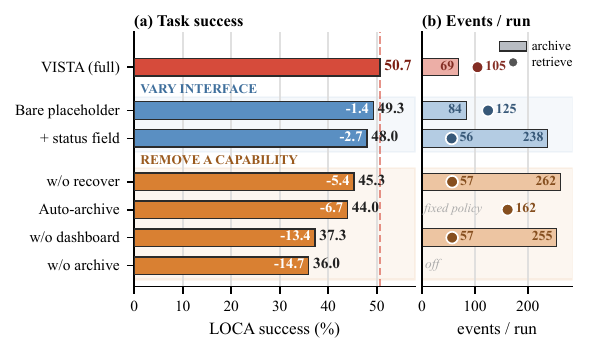

Typed Blocks
Conversation, tool calls, file reads, and derived state become addressable workspace blocks.
arXiv 2026
Eliciting self-managed context via a proprioceptive dashboard.
1The Chinese University of Hong Kong, Hong Kong, Hong Kong 2LIGHTSPEED, Shenzhen, China
Long-horizon tool agents are bottlenecked by how their context grows toward the limits of the context window. VISTA represents working memory as typed, addressable blocks, surfaces runtime state through a dashboard, and archives blocks as recoverable full-fidelity payloads. The same untrained interface transfers across LOCA-Bench, BrowseComp-Plus, and GAIA.

Conversation, tool calls, file reads, and derived state become addressable workspace blocks.
The model sees token usage, recency, access history, and context pressure before acting.
Archived blocks are moved out of the active window without destroying full-fidelity evidence.

In one 128K LOCA-Bench run, VISTA keeps the live context compact relative to a no-archive counterfactual, archives large evidence, and recovers payloads when the agent needs them.




| Method | State | Control | Recover | LOCA Acc. | LOCA Traj. | BrowseComp Acc. | BrowseComp Traj. | GAIA Acc. | GAIA Traj. |
|---|---|---|---|---|---|---|---|---|---|
| Fixed external policy | |||||||||
| ReAct | - | - | - | 22.7 | 3.51M | 39.3 | 163K | 61.2 | 23K |
| Tool-result Clearing | - | - | - | 26.7 | 2.60M | 42.7 | 161K | 65.5 | 24K |
| Stale-obs. Masking | - | - | - | 28.0 | 3.32M | 38.0 | 112K | 61.8 | 24K |
| Skeleton Compression | - | - | - | 33.3 | 2.84M | 40.0 | 139K | 70.3 | 28K |
| Agent-mediated / lossy | |||||||||
| SLIM (summary) | - | partial | - | 29.3 | 3.76M | 49.3 | 162K | 67.9 | 30K |
| Active Context Compression | - | yes | - | 36.0 | 3.20M | 42.7 | 162K | 71.5 | 39K |
| Context-Folding | - | yes | - | 34.7 | 3.41M | 43.3 | 166K | 64.8 | 39K |
| Lossless external store | |||||||||
| Auto-Archive + Recover | - | - | yes | 44.0 | 2.73M | 45.3 | 133K | 63.6 | 20K |
| Claude Code | - | yes | partial | 42.7 | 6.72M | 52.0 | 247K | 73.9 | 44K |
| VISTA and ablations | |||||||||
| VISTA w/o dashboard | - | yes | yes | 37.3 | 5.25M | 50.0 | 423K | 68.5 | 24K |
| VISTA w/o recovery | yes | yes | - | 45.3 | 2.99M | 43.3 | 161K | 72.1 | 28K |
| VISTA (full) | yes | yes | yes | 50.7 | 2.86M | 58.0 | 135K | 73.3 | 33K |
git clone git@github.com:binyxu/VISTA.git
cd VISTA
cp .env.example .env
# edit .env with LOCA_OPENAI_API_KEY and LOCA_OPENAI_BASE_URL
bash run_loca_self_managed.sh@article{xu2026vista,
title = {LLM Agents Are Latent Context Managers: Eliciting Self-Managed Context via a Proprioceptive Dashboard},
author = {Xu, Binyan and Li, Haitao and Zhang, Kehuan},
journal = {arXiv preprint arXiv:2606.30005},
year = {2026}
}